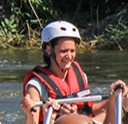

Our Purpose and Mission
At River Flow Adventures, our purpose is to awaken your sense of discovery through safe, thrilling river expeditions. Our mission is to provide unforgettable whitewater experiences built on expert guidance, safety, and deep respect for nature. Guided by the creed that every rapid conquered builds lifelong confidence, our motto remains simple: Safety First, Adventure Always.